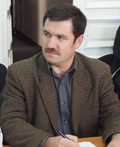

Interviu cu deputatul PPCD, Vlad Cubreacov, membru al Adunării Parlamentare a Consiliului Europei
Domnule Cubreacov, ați depus de curând la Strasbourg un proiect de Rezoluție cu privire la istro-români. Ce ne puteți spune despre acest proiect, care reprezintă o premieră absolută în istoria minorității istro-române?
 În calitatea mea de membru al Subcomisiei APCE pentru Minorități, am redactat și depus la 17 aprilie proiectul de Rezoluție privind situația culturală dificilă a minorității istro-române deosebit de amenințate, iar la 21 aprilie 2008 acesta a fost înregistrat oficial, fiind difuzat, în limbile engleză și franceză (La situation culturelle difficile de la minorité istro-roumaine particulièrement menacée / Difficult cultural situation of the Istro-Romanian minority particularly threatened), ca document al Consiliului Europei cu numărul Doc. 11595. Proiectul a fost semnat de 34 de deputați din 20 de state membre ale Consiliului. Semnatarii reprezintă toate cele 5 grupuri politice din sânul Adunării Parlamentare. Urmează ca proiectul să fie examinat de Biroul APCE, care va decide asupra sorții lui de mai departe. Documentul este deja disponibil pe internet, pe pagina oficială a Consiliului Europei: http://assembly.coe.int. Scopul meu este ca acest proiect de rezoluție să fie trimis Comisiei Juridice și Drepturi ale Omului pentru desemnarea unui raportor. Până la următoarea parte a sesiunii APCE de la sfârșitul lunii iunie vom cunoaște decizia Biroului.
Ce anume cereți prin proiectul de Rezoluție Doc. 11595 cu privire la istro-români?
Măsuri urgente pentru salvarea acestei minorități amenințate. Prima ar fi recunoașterea oficială a minorității istro-române. Din 1945, când Istria, care a aparținut între cele două războaie mondiale de Italia, a fost încorporată de către Iugoslavia, istro-românii nu au fost niciodată recunoscuți ca minoritate. De altfel, statul croat recunoaște expres, prin lege, și protejează pe teritoriul său doar 7 minorități etnice și limbile lor, nefiind recunoscută doar minoritatea istro-română. Croația a semnat Carta europeană a limbilor regionale și minoritare și a depus instrumentele de ratificare la 5 noiembrie 1997. Acest acord a intrat în vigoare pentru Croația la 1 martie 1998. Organizația internațională UNESCO a inclus dialectul istro-român în Cartea roșie a limbilor în pericol (UNESCO Red book on endangered languages), amintind că este grav periclitat, întrucât nu există administrație, învățământ, presă sau biserici în acest dialect istoric al limbii române. Cer deci, împreună cu alți colegi din 20 de țări, drepturi elementare pentru o populație care merită un tratament civilizat și susținere pe plan cultural, educațional și identitar. Totodată, cerem organizarea unor forumuri internaționale de dezbateri și a unor seminare ale experților pentru studierea și repertorierea cu grijă a particularităților dialectului și culturii istro-române, parte a patrimoniului cultural și istoric românesc și european. Sper ca prin proiectul de Rezoluție prezentat să sensibilizez și Biroul european al limbilor puțin răspândite, instituit în 1982 din inițiativa Parlamentului European ca instituție nonguvernamentală de interes continental finanțată de Comisia Europeană și avându-și cele două sedii la Bruxelles și Dublin. Mai vrem ca APCE să invite autoritățile Croației să recunoască prin lege minoritatea istro-română și să-i garanteze acesteia respectarea drepturilor și libertăților fundamentale așa cum sunt ele înscrise în Convenția Europeană a Drepturilor Omului și, mai cu seamă, drepturile lingvistice, culturale și religioase în următoarele domenii: a. învățământul în limba maternă; b. serviciile religioase în limba maternă; c. ziare, reviste, emisiuni radio și de televiziune în limba maternă; d. susținerea asociațiilor culturale ale istro-românilor. Proiectul nostru de Rezoluție este, dacă vreți, un S.O.S. pentru salvarea istro-românilor.
Unde locuiesc istro-românii și câți mai sunt ei astăzi?
Zona locuită de istro-români este cunoscută până astăzi și ca regiunea Ciceria, de aceea acești confrați ai noștri mai sunt numiți și Cici. Unii le mai spun onomatopeic Ciribiri (după cuvintele pronunțate dialectal "cire"/cine și "bire"/bine), iar ei își spun rumâri sau rumeri. Cele mai recente ediții ale marilor enciclopedii ale lumii, precum și UNESCO ne prezintă cifre care variază între 500 și 1500 de vorbitori concentrați în special în opt localități din partea croată a peninsulei Istria și în două localități din partea slovenă a peninsulei. în Croația este vorba de satul Žejane/Jeiăni (cel mai mare dintre ele, situat la nord de Muntele Mare sau Maggiore/Učka) din plasa Mune, județul (županija) Primorsko-goranski, precum și de satul šušnjevica/șușneviță sau Val d’Arsa și cătunele Brdo/Bârda, Jesenovik/Sucodru, Nova Vas/Nosela, Kostračani/Costerceani, Letaj/Letai și Zankovci din plasa Kršan/Crișan, județul (županija) Istria, iar în Slovenia este vorba de localitățile Golac și Polijane. Multe surse vorbesc și despre alte localități din peninsula Istria, cum ar fi Dolinšćina, Draga, Dražina, Gradinje, Grobnik, Jelavići, Miheli, Trkovci, Perasi, în care există astăzi vorbitori ai dialectului istro-român. Se mai cunoaște că acum șapte decenii existau vorbitori ai acestui dialect și în alte sate sau cătune din peninsulă, cum ar fi: Munc, Liubici, Brig, Banascra, Mune Mare, Negri, Schilazzo, Santa Lucia, Ceravizzo, Cărbune, Cărnița, Stara Guna, Corte Alba, Vlașca, Vlahi, Fărăgun, Cătun, Cepici, Lițul, Runchi, Tuplițe, Cuculeani, Rumeri, Romania, Vale, Vlahobreg, Vodițe și altele. Toponimia peninsulei ne demonstrează însă o prezență masivă a istro-românilor în evul mediu: două așezări cu denumirea Romania, altele unsprezece cu denumirea Cătun, apoi Vlasici, Vlascova, Volosca, Vlahova, Rumeni, Spinei, Murari, Sugari, Ciobani, Ciubănici, Ierbuliște, Bolobani, Bolovani, Buzet, Sărman, Floricici. în 1896, Teodor T. Burada publica o listă de 114 localități sau cătune istriote populate altădată de români și care își pierduseră în secolul XIX limba maternă, dar mai păstrau un șir de caracteristici etnice românești. Primul istoric care i-a descris pe istro-români a fost triestinul Manarutta, cunoscut ca Fratele Irineo della Croce. El scria în 1698 că aceștia aveau "o limbă proprie a lor similară limbii române. De aceea, ei se numesc între ei, în propria lor limbă, rumeri" și că locuiau până la porțile Triestului, la Opicina, Trebaciano și Gropado. De asemenea, până în secolul XIX istro-românii mai locuiau într-un număr destul de mare și în insulele Veglia/Krk și Cherso/Cres din Marea Adriatică. Românii de pe aceste insule sunt complet asimilați. Astăzi există o mică diasporă istro-română în orașul italian Trieste din nordul peninsulei Istria și o altă diasporă care nu depășește 500 de persoane în SUA, concentrată la New York. Există un număr de câteva zeci de istro-români răsfirați în Canada, Australia și Noua Zeelandă. Tot mai mulți cercetători și ziariști români sau străini care au vizitat Istria confirmă că numărul vorbitorilor de istro-română scade vertiginos și alarmant, aceștia fiind într-un stadiu avansat de deznaționalizare.
Ce particularități prezintă dialectul istro-român față de româna noastră literară?
Istro-româna este unul din cele patru dialecte istorice ale limbii române vechi, cu mult mai asemănător cu standardul literar daco-român decât cu aromâna. Istro-româna este caracterizată prin câteva particularități, cum ar fi rotacismul (transformarea lui "n" intervocalic în "r," bunăoară: inimă-irimă, lumină-lumiră, lună-lură, mână-mâră, pâne-pâre, un-ur sau rumâni-rumâri) și apariția unei noi vocale egal apropiate atât de "a" cât și de "o," marcate prin semnul grafic "å" (bunăoară: årde/arde, cåle/cale, dråg/drag, cårle/care(le), cårne/carne, cåsă/casă, påste/paște, sårpe/șarpe, våche/vacă). Dialectul istro-român conservează un șir de vechi reflexe lingvistice românești, de la cumpăna secolelor XII și XIII sau chiar de mai înainte, explorând într-un mod interesant perioada străromână.
Există și un ingredient lexical croat destul de puternic, dar nu într-atât încât să nu recunoaștem trăsăturile românești ale dialectului. Judecați și dumneavoastră parcurgând cuvintele Crezului catolic în dialect istro-român: "Io cred în ur Domnu, Ceåce cårle țire tote, cårle facut-å ceru și pemintu, ceale ce se vedu și ceale ce nu se vedu. Și în Gospodinu Isus Crist, Fiľu lu Domnu, îns nåscut, cårle din Ceåce s-å nåscut, månt’e de toț secoli. Svitlost din svitlost, Domnu pravi din Domnu pravi, nåscut ma nu fåcut, din urea substanțea ca și Ceåce, prin cårle tote facut-s-av. Cårle za noi omiri și za scaparea nostrea lasată-s-å din cer și s-å înjivotit di la Svetu Spirit și din Vergura Maria și facută-s-å om. Și fost-å restignit za noi în timpii lu Ponțîu Pilat și suferit-å și fost-å zacopereåit și uscrâsnit-å treia zi cum fost-å piseait în Sveta Scripturea. Și dignit-s-å în cer și șade la desna lu Ceåce. Și rapoi va veri cu glorie săndi ceľi viľi și ceľi morț, lu cårle cesarie nu se va fini. Și în Svetu Spirit, Domnu ce daie jivlenia, cårle din Ceåce iase și di la Fiľu, cela ce scupa cu Ceåce și Fiľu e adoreåit și gloreåit, cårle a cuvintat prin proroci. în ure sveta, catoliche și apostoliche beseåriche. Io cunoscu ur crist za opostirea lu pecatele. Io șteptu sculare lu morți și jivlenia de secole, cea ce fi-va. Amen!" Există în dialectul istro-român și un număr de cuvinte de origine latină care au fost pierdute din celelalte dialecte românești sau sunt atestate izolat și periferic: åsir-măgar, cåibă-cușcă/colivie, ii-(a) merge, gună-giubea, manta etc. Pentru istoria și filologia romanică, ca și pentru dialectologia românească, istro-românii și graiul lor au o inestimabilă valoare istorică, filologică și etnografică, prezentând un interes cu totul aparte.
Istro-românii sunt catolici?
Da, sunt catolici de mai multe sute de ani. Unii susțin că la origine ar fi ortodocși. Există mărturii că biserica din satul Sucodru ar fi fost inițial ortodoxă. O altă ipoteză susține că istro-românii ar fi fost de la bun început romano-catolici și că s-ar fi desprins din masivul etnolingvistic românesc în secolele XI sau XII, deci înainte de descălecarea țării Moldovei, din zona Crișanei sau chiar a Maramureșului. Ipoteza se sprijină pe argumentul lingvistic oferit de fenomenul rotacismului, caracteristic anume zonelor Maramureșului, Crișanei și parțial zonei Clujului. Dacă această ipoteză s-ar confirma, s-ar putea susține cu mai mult temei și originea românească transilvană a romano-catolicilor de azi din județul Bacău și zonele adiacente. Multă lume a fost surprinsă să descopere că una din localitățile altădată locuite de istro-români se numește până astăzi Kršan/Crișan, acum centru de plasă (općină) în județul Istria. Istro-românii au fost însă vulnerabili lingvistic în fața clerului catolic croat sau sloven care a reprezentat un factor puternic în deznaționalizarea lor. Până pe la mijlocul secolului XIX, episcopii catolici și curtea imperială de la Viena acceptau hirotonirea de preoți dintre istro-români, astfel încât, pe lângă slujba în limba latină, predicile și mărturisirile se făceau în graiul istro-român. Se cunoaște numele unuia dintre acești preoți: Micetici, născut la Bârda. Dacă astăzi ar avea unul sau doi preoți care să vorbească dialectul lor, istro-românii ar avea mari șanse de supraviețuire.
Pe cât de mare și viu a fost și mai este la noi interesul pentru istro-români?
În diferite perioade de soarta istro-românilor s-au interesat, i-au vizitat, au scris despre ei sau au valorificat material dialectologic mai mulți fruntași ai vieții noastre culturale și academice. Trebuie să-i amintim aici pe Gheorghe Asachi, Simion Bărnuțiu, Aron Pumnul, Ion Heliade- Rădulescu, Timotei Cipariu, Josif Popovici, Ștefan Nanu, Ion Maiorescu, Sextil Pușcariu, Nicolae și Teodor T. Burada, Ion Coteanu, Traian Cantemir, Lecca Morariu, Ion Popovici, Alexandru Philipide, Gheorghe I. Ionescu, Matilda Caragiu Marioțeanu, Andrei Avram, Richard Sârbu, Vasile Frățilă, Vlad Bejan, Doina Azoicăi, Ion Gherman și Emil Petru Rațiu. Nu pot omite numele profesorului Petru Neiescu de la Institutul de Lingvistică și Istorie Literată "Sextil Pușcariu" din Cluj, care este autorul primului Dicționar al dialectului istro-român. Aflu mai nou că prima față bisericească din România care a vizitat vreodată satele istro-române este Prea Sfințitul Petru Gherghel, episcop romano-catolic de Iași. Dintre basarabeni primii care i-au vizitat sunt Vasile șoimaru și Sergiu Cocoș.
Și printre străini?
Dintre străini trebuie să-i amintim pe croatul Goran Filipi, decan al Facultății de Litere și Filosofie a Universității din Pola și autor al "Atlasului lingvistic istro-român," care a văzut lumina tiparului în 2002, la Pola, pe italienii Carlo Taglavini și Nerina Feresini, pe profesorul britanic H. A. Hurren de la Universitatea Oxford, care a publicat în 1972 "Descrierea lingvistică a istro-românei," pe croatul August Kovačec, autorul primului Dicționar istroromân-croat cu o gramatică și texte în dialect, pe germanul Dahmen Wolfgang, pe cehul Carlo Lavaček, pe eruditul și poliglotul cercetător austriac Tede Kahl de la Institutul pentru Europa Orientală din Viena, și pe italianul Ervino Curtis de la Trieste, unul din neobosiții sprijinitori ai istro-românilor. Trebuie să arătăm aici că una din lucrările monumentale despre istro-români și dialectul lor, "Studii Istroromâne," a fost scrisă de Sextil Pușcariu în colaborare cu germanul Arthur Byhan, italianul G.I. Ascoli și istro-românul Alois (Luigi) Belulovici, și publicată în 1926 sub egida Academiei Române, după ce în 1906 publicase o culegere de "Texte istro-române."
Academia Română este prima instituție care s-a preocupat de istro-români. în alte țări există astăzi interes pentru ei?
Departamentul de Lingvistică din cadrul Universității New York derulează, iar Fondul pentru Limbi pe cale de dispariție al Universității americane Yale finanțează din noiembrie 2005 un proiect de documentare asupra istro-românei, proiect condus de dna Zvjezdana Vrzić. Acest proiect este prevăzut să se deruleze mai mulți ani și are ca scop documentarea și păstrarea istro-românei prin studiul academic al comunității și prin crearea unor mecanisme de care să beneficieze nemijlocit această mică comunitate: informarea comunității despre pericolul dispariției dialectului istro-român; culegerea de materiale audio și video în dialect; publicarea unei antologii de texte istro-române și a unui dicționar multimedia; dezvoltarea de materiale didactice necesare predării istro-românei și organizarea de cursuri în dialect atât pentru vorbitorii activi, cât și pentru cei care nu îl mai stăpânesc îndeajuns de bine; crearea unei pagini web care să includă materiale informative despre dialect; și nu în ultimă instanță filmarea unui documentar despre vorbitorii acestui dialect atât din Istria, cât și din diasporă.
Și instituțiile internaționale?
Ca semnatară a Cartei europene a limbilor regionale și minoritare, Croația se află sub monitorizarea Comitetului de Miniștri al Consiliului Europei. De curând, la 12 martie 2008, Consiliul Europei a făcut public Raportul Comitetului său de Experți privind aplicarea de către Croația a Cartei europene, care, cum se știe, prevede un mecanism de control care permite evaluarea periodică a aplicării acesteia, în vederea prezentării de recomandări către statele semnatare privind ameliorarea legislației, politicilor și practicilor acestora în domeniul limbilor regionale sau minoritare. Am fost bucuros să constat că în Capitolul 2. Evaluări privind aplicarea părților a II-a și a III-a ale Cartei, Raportul se referă, în premieră absolută, la dialectul istro-român (subcapitolul 2.1.2, paragraful 48, Istro-româna). Astfel, Comitetul de Experți subliniază: “Un șir de elemente probează prezența tradițională în Istria a unei mici comunități de vorbitori ai unei limbi numite istro-română. Comitetul de Experți dorește să obțină informații asupra acestei limbi cu ocazia următorului raport periodic." Am arătat deja că și UNESCO, ca structură a ONU, s-a autosesizat, incluzând dialectul istro-român în Cartea Roșie a limbilor în pericol.
Nu există o literatură cultă în dialectul istro-român. Această ramură a latinității orientale a fost și este cea mai mică și cea mai amenințată. Ce nume, dintre cele ale istro-românilor care s-au manifestat în viața publică, pot fi aduse în atenție?
Chiar dacă nu sunt numeroși, istro-românii au dat naștere unor personalități demne de remarcat. Dintre cei mai vechi putem aduce în atenție numele lui Matei Vlăhici (1520-1575), teolog protestant de limbă latină și germană din secolul XVI, primul și cel mai de încredere colaborator al lui Martin Luther. Matei Vlăhici este cunoscut și ca Matthias Flacius Illyricus (în latină), Matija Vlačić/Vlachich (în croată) și Matthias Flach (în germană). Nu-l putem trece cu vederea pe Andrei Glavina, apostolul istro-românilor, cel care a înființat și a condus între 1921 și 1925 la šušnjevica/șușneviță sau Val d’Arsa școala "împăratul Traian" cu predare în dialectul istro-român și în româna literară, autor al primei cărți de rugăciune în dialect istro-român. Amintim numele a doi frați istro-români: profesorul Luigi Belulovici și medicul Giuseppe Belulovici. Mai nou trebuie să-l avem în vedere pe scriitorul istro-român de limbă italiană Ezio Bordul sau pe regretatul jurnalist de limbă italiană și croată, dar de origine istro-română, Ezio Mestrovich (1941-2003). Un mare entuziast este istro-românul Corrado Clănaț (Clagnaz), care a înființat în 1994, la Trieste, împreună cu alți entuziaști, Asociația culturală istro-română "Andrei Glavina." Această asociație editează pe speze proprii revista "Scrisore către fraț rumeri" (Scrisoare către frații români). în SUA, una dintre persoanele cele mai active din sânul comunității istro-române este arhitectul Maria Luisa (Marisa) Ciceran. Bineînțeles că cea mai mare personalitate dintre istro-români este cea a lui Nicolae Teslea (1856-1943), devenit cetățean american și cunoscut ca Nicola Tesla (în croată și în alte limbi). Savantul și inventatorul Nicolae Teslea, astăzi revendicat și de sârbi, și de croați, a fost propus în 1915, împreună cu Thomas Edison, la Premiul Nobel pentru fizică, premiu pe care l-a refuzat. Nicolae Teslea a descoperit câmpul magnetic rotitor, a inventat radioul înaintea lui Marconi, sistemele de comunicare fără fir și sistemul bifazat de curent electric
alternativ. Acest inventator istro-român genial a construit primele motoare asincrone bifazate, generatoarele electrice, transformatorul electric de înaltă frecvență. Fire harnică și vizionară, supranumit "extraterestrul român," Nicolae Teslea a înregistrat peste 1200 de invenții de o tehnicitate ce surclasa contemporaneitatea. în SUA foarte multă lume spune că numele corect al secolului XXI este Nicolae Teslea. Marea preocupare științifică a acestui istro-român a ținut de transmiterea informației și a energiei la distanță, mai bine zis fără fir (werless). A murit la New York într-o mizerie cumplită.
Istro-românii mai pot fi oare salvați?
Cred cu tărie. Trebuie să ne implicăm cu toții. Să începem prin a stabili și cultiva contacte cât mai intense cu ei. Mi-aș dori, bunăoară, ca Biserica romano-catolică din România să delegheze 3-4 preoți de limbă română în comunele istro-române. Mi-aș mai dori ca unele comune din România și Republica Moldova să încheie acorduri de parteneriat, înfrățindu-se oficial măcar cu cele două localități istro-române mai mari: Jeiăni și șișneviță. Aș fi încântat dacă tineri istro-români ar putea veni la studii în România, ca Andrei Glavina altădată. Se pot face multe lucruri dacă am avea suficientă voință și dragoste pentru acești frați ai noștri. Ar fi un mare păcat dacă graiul și comunitatea lor, care este parte din ființa noastră etnică, s-ar stinge definitiv. Nu avem voie să asistăm neputincioși la moartea unui grai atât de prețios al limbii noastre. în ultimul ceas, istro-românii trebuie salvați.
Dar credeți că este posibilă o asemenea încercare temerară?
Să știți că există precedente importante când chiar limbi sau dialecte dispărute complet au fost readuse la viață. Eu cunosc cel puțin trei cazuri de limbi stinse complet și reînviate, întrucât fuseseră fixate anterior în scris și a existat voință puternică pentru resuscitarea lor. Mă gândesc întâi de toate la limba ebraică (ivrit în original) reînviată de Eliezer Ben-Yehuda, al cărui fiu a fost, după o pauză de mai multe secole, primul ei vorbitor nativ. Acum ebraica e limba oficială a statului Israel, o limbă viguroasă vorbită de câteva milioane de oameni. Sau limba manx, de origine celtică, din mica insulă suverană Man, situată între Irlanda și Marea Britanie, limbă stinsă la 27 decembrie 1974 odată cu ultimul ei vorbitor nativ, dar reînviată printr-o activitate susținută, astfel încât este predată astăzi în școli și există deja peste 2000 de persoane care o folosesc ca limbă facultativă din patriotism local, precum și câteva sute de copii ai acestora care o vorbesc ca limbă nativă. Un alt caz similar ni-l prezintă limba cornică (kernewek, în original, și cornish, în engleză), de asemenea, de origine celtică, din provincia britanică Cornwall. Cornica s-a stins în anul 1906 odată cu ultimul ei vorbitor, Alison Treganning, însă datorită eforturilor depuse în anii 1930 de către doi cercetători britanici, Henry Jenner și Robert Morton Nance, aceasta a reînviat. în prezent cornica este vorbită activ, ca limbă nativă, de peste 2000 de persoane, iar alte peste 3000 o cunosc bine și o folosesc ca limbă facultativă. Spre deosebire de Croația, care nu a recunoscut istro-româna odată cu ratificarea Cartei europene a limbilor regionale și minoritare, Marea Britanie a recunoscut, la 5 noiembrie 2002, statutul de limbă regională și minoritară al cornicei, angajându-se să o susțină și să o protejeze. Istro-româna, care are încă vorbitori nativi, se află acum la o răscruce: sau se va stinge definitiv sau va resuscita. Eu cred că trebuie salvată și voi încerca să pun umărul.
Uniunea Europeană are și ea un cuvânt de spus?
Croația se pregătește să adere la Uniunea Europeană. Ea va trebui să țină cont de recomandările Comisiei pentru Limbile Europene Regionale și Puțin Răspândite, precum și de prevederile unor documente ale UE cum sunt Rezoluția Parlamentului European privind limbile europene regionale puțin răspândite din 13 decembrie 2001 și altele. Așa cum se cunoaște, respectarea și protejarea minorităților constituie o condiție pentru aderarea la UE. Comisia Europeană are în vedere prin limbi regionale sau minoritare "limbile utilizate în mod tradițional de o parte a populației unui stat și care nu sunt nici dialecte ale limbii (limbilor) oficiale ale statului respectiv, nici limbi ale populațiilor migratoare, nici limbi create artificial." Rolul Comisarului European pentru multilingvism, Leonard Orban, dintr-o fericită întâmplare român, precum și al celor 35 de deputați români în Parlamentul European este unul covârșitor în apărarea minorității etnoculturale și lingvistice istro-române prin fixarea de exigențe clare în fața Croației până la aderarea acesteia la UE. Pe de altă parte, România, ca stat înrudit care este deja membru al UE, îi poate cere Croației reciprocitate în problema minorităților, întrucât cei 4180 de croați carașoveni din România, comparabili ca număr și vechime cu istro-românii, au rezervat un loc de deputat în Parlamentul de la București, beneficiază de asistență religioasă în biserici și de învățământ în limba croată în cele trei grădinițe și trei școli publice din localitățile lor și sunt sprijiniți concret de către stat pentru păstrarea și promovarea propriei lor identității. Cadrul bilateral pentru această reciprocitate este conturat de Tratatul de bază dintre România și Croația din 18 februarie 1994. Potrivit tratatului, cele două țări s-au angajat să asigure, fiecare pe teritoriu său, drepturi persoanelor aparținând minorității naționale croate în România și ale persoanelor aparținând minorității naționale române din Republica Croată, în conformitate cu documentele CSCE, cu convențiile
internaționale ratificate de cele două părți și cu normele recunoscute ale dreptului internațional. De asemenea, părțile s-au angajat să aplice cu bună-credință standardele internaționale referitoare la protecția identității etnice, culturale, lingvistice și religioase a persoanelor aparținând minorităților naționale.
Înțeleg că în prezent, istro-românii, nefiind recunoscuți prin lege de către statul croat ca minoritate, nu dispun de nici o instituție proprie...
Așa este, din păcate. Și nu le-au avut niciodată pe parcursul istoriei lor multiseculare din peninsulă. Cu toate acestea, în ultimii ani s-au făcut primele încercări de a cristaliza forme de organizare comunitară cu funcții de conservare, protejare și dezvoltare a identității istro-românilor. Astfel, la 29 aprilie 1994 a luat ființă la Trieste Asociația istro-română "Andrei Glavina," în martie 1995 s-a înființat la șușneviță asociația culturală "Soborul lu istro-rumeri" (Uniunea istro-românilor), există un celebru grup folcloric numit "Žejanski Zvončari," adică "Clopotarii din Jeiăni," condus de Mauro Doričić, un inimos animator al vieții culturale istro-române încă destul de timide, și, în fine, mai există și o Asociație democratică a românilor din Croația. Toate acestea trebuie să fie parteneri ai guvernului croat și ai administrației locale din Istria pentru salvarea identitară a istro-românilor, primind finanțare bugetară. Cel mai mult însă astăzi istro-românii au nevoie, pentru început, de slujbă în limba maternă la biserică, de studierea acestei limbi, măcar o oră pe săptămână de elevii istro-români și, eventual de un post de radio în dialect și în româna literară. Acestea nu sunt posibile fără sprijinul statului croat și al celui român.
Probabil că școala ar fi cea mai importantă.
Într-adevăr, pentru că îi privește pe copiii istro-români, cei care trebuie să recepteze, să vorbească și să transmită mai departe limba maternă. Și aici îmi amintesc cuvintele lui Teodor T. Burada de la 1893, dar care, iată, sunt de o sfâșietoare actualitate: "o voce ne cheamă și o datorie sfântă ne impune ca să ne aruncăm privirile asupra fraților noștri din Istria, părăsiți de toți și bântuiți de toate nenorocirile, purtând povara grea a străinismului de sute de ani, să nu-i lăsăm să fie cotropiți de slavi, silindu-ne prin toate mijloacele ca să se înființeze și la ei școli, în care instrucțiunea să se predea în limba maternă."
La ce acțiuni ar trebui să ne așteptăm din partea autorităților croate?
Un important prim pas, dar evident insuficient, a fost deja făcut. Printr-o Decizie a Ministerului croat al culturii din 27 august 2007 graiurile istro-române (Istro-rumunjski govori (vlaški i žejanski)) au fost declarate drept bun cultural nematerial și incluse în Lista bunurilor culturale nemateriale protejate (Lista zaštićenih nematerijalnih kulturnih dobara), care cuprinde orice bun care s-a înrădăcinat ca tradiție și prezintă valoare deosebită sub aspect științific, etnografic, sociologic, antropologic sau lingvistic. Graiurile istro-române sunt tratate la fel ca și cântarea polifonică, unele dansuri sau obiceiuri și tradiții croate de sărbătoare. Deci, este vorba de un tratament aplicat oricărei curiozități etno-folclorice. Ministerul croat al Culturii a aprobat pe hârtie și un complex de măsuri de protecție a "purtătorilor bunului," obligându-se să promoveze funcțiile și cunoașterea acestui bun în societate, să-l includă în programele sale de planificare, să asigure susținerea lui inclusiv prin învățământul formal și informal, revitalizarea segmentelor pierdute ale bunului, sensibilizarea istro-românilor asupra necesității de a evita pericolul pierderii dialectului lor. Cu toate acestea, Decizia ministerială rămâne, deocamdată, literă moartă, întrucât până astăzi statul croat nu a deschis nici o linie de finanțare bugetară pentru salvarea și perpetuarea graiurilor istro-române. Unul dintre angajamente ține de întocmirea unei gramatici și a unui dicționar, precum și includerea dialectului istro-român ca limbă maternă în programele de învățământ. Aici nu s-a făcut nimic și nici nu se știe când se va face ceva. Decizia Ministerului croat al Culturii nu specifică suficient de clar ce se are în vedere prin "purtători ai bunului," dar sunt vizate un șir de instituții cărora le-a fost adresat acest document: Primăria orașului Rjeka/Fiume, plasa (općina) Kršan/Crișan, județele (županija) Primorsko-goranski și Istria, Institutul de Filologie croată din Zagreb, Consevatoarele din Rjeka
și Pola și Direcția de protecție a patrimoniului cultural. Așa sau altminteri, această Decizie nu poate substitui recunoașterea oficială, adică prin lege, a minorității istro-române, singura care ar trebui să fie obiectul protecției din partea statului croat, în conformitate cu standardele europene. Istro-românii nu sunt doar un grup etnofolcloric, ci o minoritate națională care trebuie tratată ca atare.
Domnule Cubreacov, vă mulțumim.
Igor Burciu
May 9, 2008
© 2008 Flux